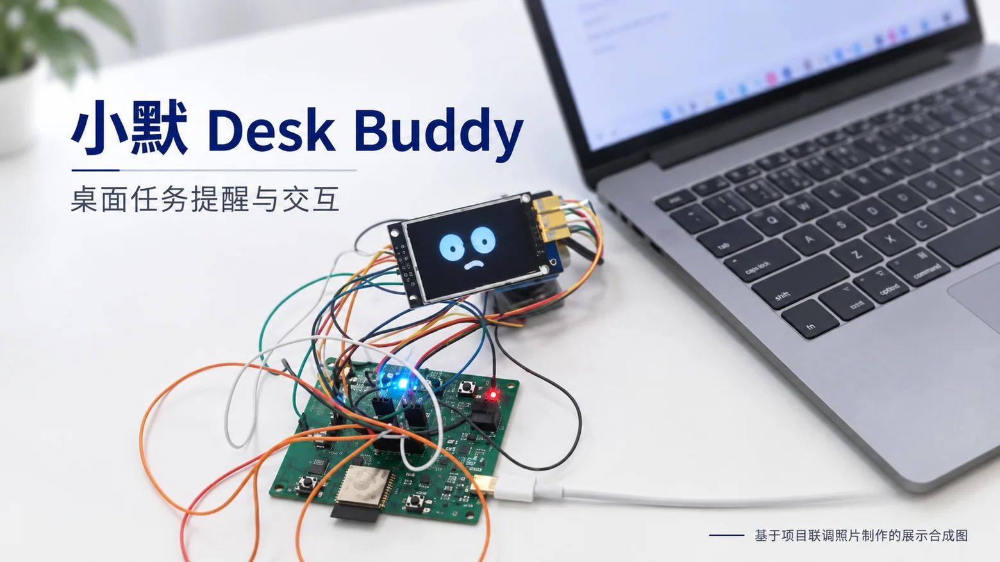
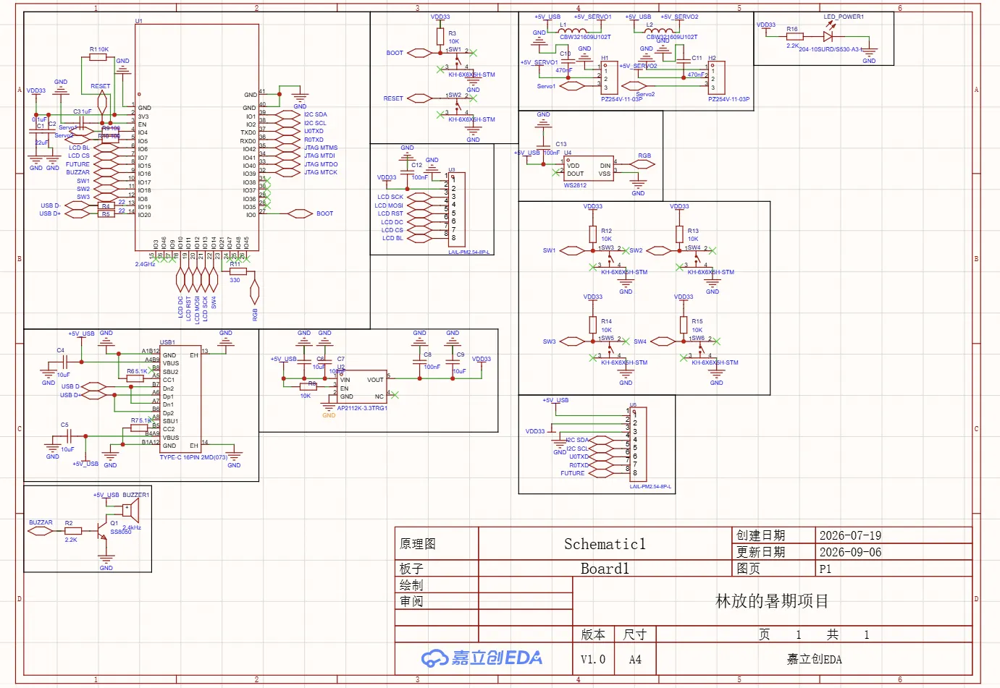
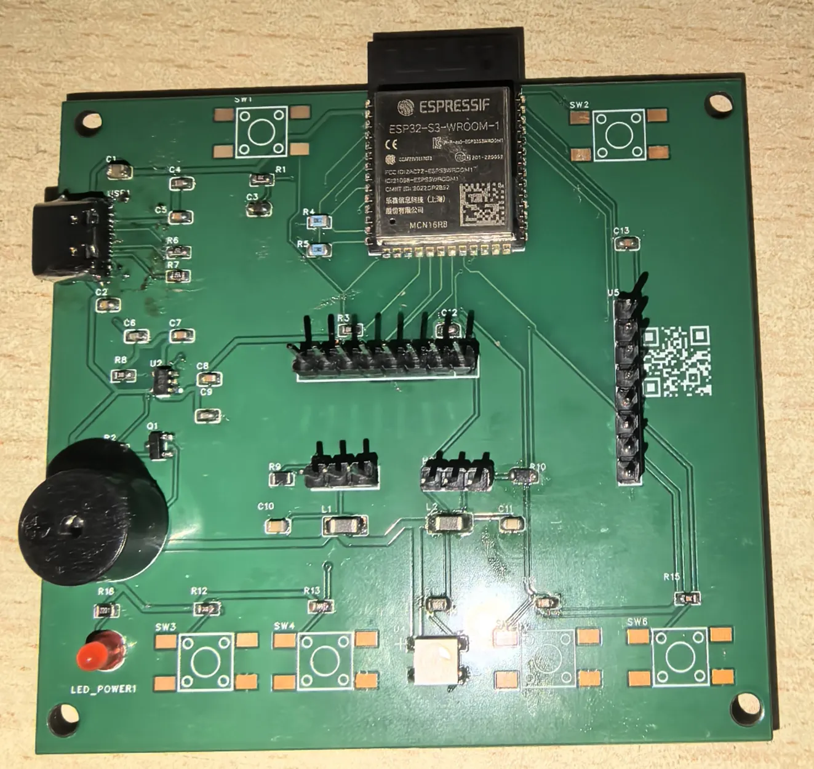
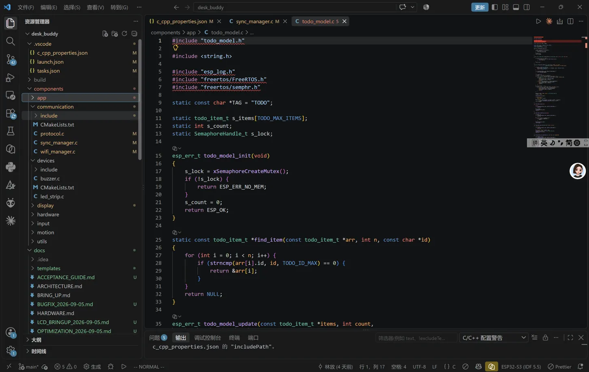
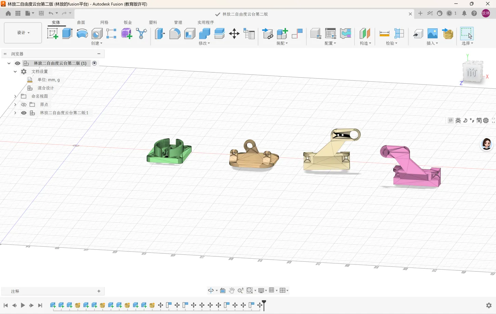
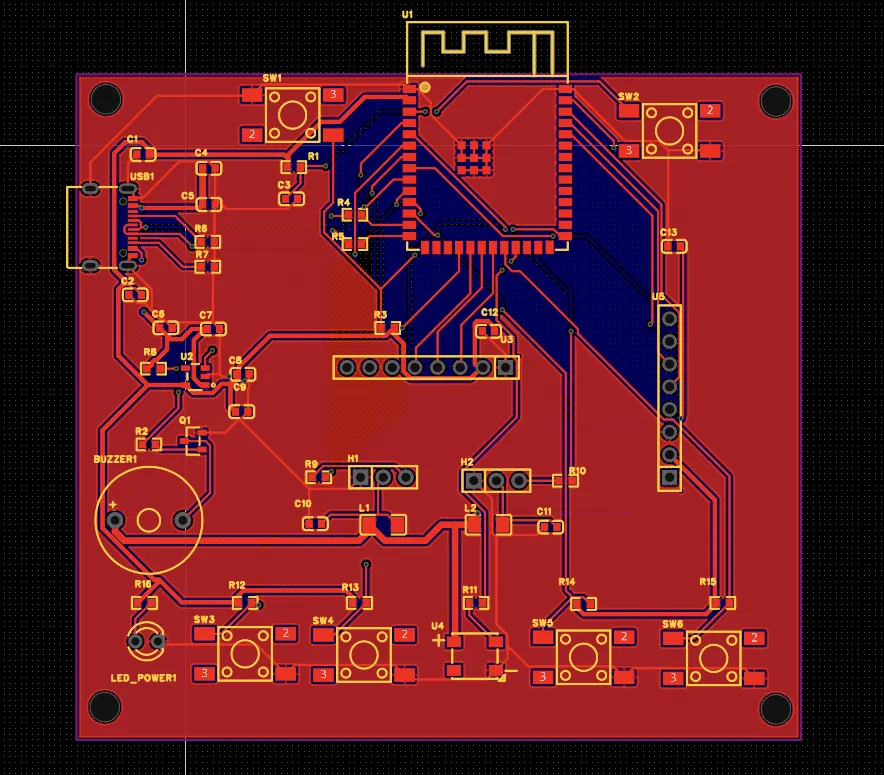
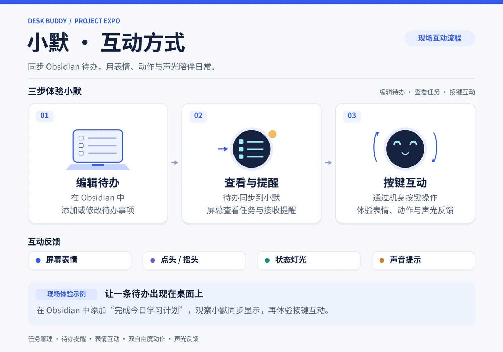

返回硬件项目索引
返回硬件项目索引小默desk_buddy
阅读项目文档 ↓“小默”（Desk Buddy）是一款面向学习与办公场景的桌面陪伴机器人，将待办管理、任务提醒与表情动作互动相结合，让数字化的日程安排转化为直观可感的桌面体验。
项目以 ESP32-S3 为控制核心，搭配自主设计的电路板、lcd液晶屏和双自由度舵机机构，通过表情变化、点头摇头及声光反馈与用户互动。小默与 Obsidian 的待办同步，用户可在电脑端编辑任务，在设备端同步查看待办划去或增添情况并接收提醒，也可通过机身按键进行操作，体验不同的互动反馈。
项目融合电路设计、嵌入式开发、电脑端通信与机械结构设计，兼顾实用功能与陪伴体验。后续将探索 AI 记忆与个性化交互，让小默更好地融入日常学习和工作。









项目文档
林放暑期项目介绍
林放暑期项目介绍
小默 Desk Buddy：把日常任务带到桌面上的陪伴机器人
项目名称： 小默 Desk Buddy
项目成员： 林放
Mentor： 应塍冰
记录时间： 2026 年 9 月 11 日
一、项目简介
从自己的使用习惯出发
“小默”的起点，是我对日常学习和任务管理的一点思考：任务写进笔记之后，能不能以更直观的形式出现在桌面上，并在状态变化时给出一些有温度的反馈？
围绕这个想法，我把 Obsidian 中的任务记录与一台桌面设备连接起来。电脑负责读取、解析和发送任务，设备负责显示与交互。这样既保留了原有的笔记习惯，也为屏幕表情、按键操作和机械动作提供了统一的数据来源。
这个暑假，我围绕小默逐步开展了嵌入式编程、电脑端工具开发、电路设计、PCB 制作和硬件调试。项目让我把原本分散的编程与硬件知识，放进一个需要真正连起来运行的系统里。
> 【插图 1：开发板原型或项目整体照片】
>
>
>
> 【视频 1：修改 Obsidian 任务后，设备屏幕更新的演示】
>
> 小默的开发板原型，esp32-s3和lcd 只是原来测试demo，具体的还未来得及录制，明天补上
>
>
>
功能与实现范围
小默的核心链路为：
Plain Text
Obsidian 今日笔记
↓ 文件监听与任务解析
电脑端 Python Companion
↓ WebSocket / JSON
ESP32-S3：数据接收、任务管理与事件处理
↓
LCD 任务页与表情界面
↓ 按设计进一步联动
按键交互、舵机动作、灯光与声音反馈
目前，开发板原型已经完成笔记任务同步到实际 LCD 的验证，能够展示任务内容及完成状态。软件中还包含备注处理、页面切换、任务选择、表情与动作管理等模块；这些功能的验证程度不同，不能仅凭存在驱动代码就认为全部外设已经完成联调。
截至本次记录，自制 PCB 已完成打样及除按键外的主要元件焊接，正在排查首次上电问题。舵机机械联动、实体按键和整机长期稳定性仍是后续工作。
主要选型与技术路线
开发板与自制板采用的模块配置需要分别核对，不能直接把原型固件配置当成新板的最终配置。后续烧录前还需确认实装模块的 Flash、PSRAM 与启动参数。
二、项目成长
嵌入式代码：从功能实现到模块协作
我在学习中逐渐把注意力从“这一段代码能做什么”，转向“数据由谁管理、事件由谁处理、多个任务如何协作”。
项目以 app_main 为启动入口，先完成 NVS、事件和任务模型等基础初始化，再创建输入、通信、动作、显示和串口控制五个任务，由主事件循环处理状态变化与联动请求。
显示相关的处理集中在显示任务中，其他模块通过命令与事件请求更新，减少多个任务直接操作界面的复杂性。GPIO 和屏幕方向等参数集中维护，也便于在开发板与 PCB 之间迁移。
在逐段阅读与调试代码的过程中，我进一步接触了 FreeRTOS 队列、任务栈、NVS 初始化、SPI 数据传输以及 LVGL 刷新机制。理解这些机制之后，启动失败或显示异常不再只是一个笼统的“程序有问题”，而是可以沿初始化顺序和数据流逐步定位。
> 【插图 2：代码目录及主程序任务创建部分】
>
>
>
> 【插图 3：任务页和表情页的实际显示照片】
>
>
>
>
电脑端工具：让同步过程可以观察
电脑端 Companion 负责监听日记文件，提取任务、完成状态和备注，再生成 JSON 快照发送给设备。项目同时配套了调试工作台，用于查看笔记原文、解析结果、发送状态和设备回执。
这套工具帮助我区分了几个容易混在一起的问题：
- 文件有没有真正保存，监听的是不是当前笔记？
- 任务有没有被正确解析？
- 数据有没有通过网络发送？
- 设备有没有接受当前这次快照？
- 接收之后，屏幕是否实际显示正确？
例如，工作台中的草稿预览只检查解析结果，并不会自动修改原笔记或驱动实体设备。真正验证同步时，需要修改被监听的实际日记文件，再结合设备日志与屏幕观察结果判断。
这种做法让调试从“改一下试试”，逐渐变成了有明确输入、过程和结果的验证。
> 【插图 4：Obsidian、调试工作台与实体屏幕的对应画面】
>
>
电路原理图与 PCB：从接线走向实物
硬件设计围绕主控最小系统、电源、USB、显示与交互接口展开。
PCB 复核过程中，我关注了 USB 数据线的引脚对应、去耦电容的位置、地回流、大电流走线和安装空间。历史复核曾提出板框、布局与铺铜方面的问题；这些记录帮助我理解：原理图上的网络连接只是起点，器件摆放和电流回路同样影响实际表现。
采购与焊接也带来了新的认识。例如，缺少 10 μF 和 22 μF 电容时，不能因为手头有 1 μF 就直接全部替换。需要区分稳压器输出电容与普通电源滤波电容，并核对容量、封装和器件要求。最终我找到了相应电容并完成焊接，没有采用随意减小容量的方式。
> 【插图 5：完整原理图】
>
>
>
> 【插图 6：最终下单版本 PCB 顶层、底层及 3D 预览】
>
>
>
>
>
>
>
>
> 【插图 7：实际 PCB 与焊接照片】
>
>
>
>
>
>
>
>
机械结构：为桌面交互提供载体
机械部分围绕屏幕承载、主板安装与双舵机姿态反馈展开。设计目标是让屏幕既能稳定展示信息，也为后续点头和转向等动作提供空间。
我需要结合实际结构继续检查屏幕视野、舵机中心位置、运动干涉、线缆余量以及螺丝装配空间。软件虽然已设定保守角度范围，但最终限位必须结合实物重新标定，不能直接套用舵机标称的完整转角。
本节配图后，可进一步说明外壳、支架和转动部件之间的安装关系。
> 【插图 8：机械结构整体模型】
>
> 适当参考了makerworld上面的既有模型
>
>
> 【插图 9：屏幕、舵机和主板的装配关系】
>
> 临时拍的，展示的不是特别好
>
>
> 【插图 10：已有打印件或切片参数截图，如尚未打印可省略】
>
>
>
调试与迭代：把问题转化为可验证的步骤
迭代一：处理 Wi-Fi 连接时序
实机联调时，首次 Wi-Fi 连接尚未完成，通信循环又发起连接请求，出现重复连接报错。处理时先等待首次连接，再进入后续重试逻辑。重新构建、烧录后，当次启动记录中未再出现同样报错。
这让我认识到，网络连接是一个需要等待和判断状态的过程。代码中调用了连接函数，并不意味着下一行执行时网络就已经可用。
迭代二：校准屏幕颜色与方向
LCD 联调不仅需要驱动初始化成功，还需要检查颜色、方向和实际显示区域。项目使用红、绿、蓝、白、黑测试画面辅助判断，并结合实屏校准 RGB/BGR 和反色配置。
这次经历让我学会把“SPI 能通信”“屏幕被点亮”和“显示内容正确”分开验证，也认识到同一驱动型号的屏幕仍可能需要结合具体模块调整参数。
迭代三：验证笔记到屏幕的完整链路
已有联调记录覆盖了任务完成、改名、清空备注和恢复等快照接收检查。后续也在开发板上实际确认了任务列表显示，以及新增笔记任务到 LCD 的更新。
验证中，我使用同步编号对应发送与接收结果，避免把旧回执当作当前操作成功。同时保留一个重要区别：设备确认接收只能证明数据到达，显示和机械动作仍需要单独观察。
迭代四：用串口输入推进交互调试
实体按键尚未就绪时，利用串口命令模拟页面切换、任务选择和操作，并提供示例数据、颜色与表情测试入口。这样可以先检查上层逻辑，之后再验证实体按键的接线和消抖。
这让我体会到，为项目设计调试入口也是开发工作的一部分。一个容易观察、容易复现问题的系统，往往更容易继续完善。
迭代五：自制板首次上电排查
9 月 11 日，自制 PCB 上电后出现电源指示灯不亮、电脑未识别到 USB 的情况，使用万用表测量时读到 0.000 V。同一根 A-to-C 线和电脑 USB 口能够正常给旧开发板供电，因此目前将排查重点转向新板供电通路和装配情况。
下一步是在断电状态下检查 5 V 对地电阻，再检查 Type-C 插座、VBUS 与 GND 通路，区分短路保护和供电连接不连续等可能原因。最终通过Type-C的多次重焊和补充焊锡电源指示灯亮起。但是具体的usb原生烧录还未调试
这次问题提醒我，硬件调试应先确认供电和基本启动条件，再进入固件与应用功能排查。没有发烫或指示灯不亮，都不能单独作为故障结论。
> 【插图 11：Wi-Fi 修复前后日志或代码差异】
>
>
> 【插图 12：屏幕测试与实际任务同步】
>
>
>
>
专业知识拓展：围绕小默建立系统级工程认识
小默的开发过程，使我的学习逐渐从单个功能的实现，延伸到实时系统、通信一致性、图形数据通路和电源完整性等方面。项目中的联调要求我把代码行为、硬件条件与实际现象联系起来，也推动我进一步理解这些技术背后的原理。以下内容结合已经阅读的代码、实际调试经历和解析估算展开；涉及性能、供电瞬态与机械响应的分析，仍需要后续实验验证。
6.1 从 FreeRTOS 任务划分理解实时系统的协作机制
小默固件将输入扫描、网络通信、显示刷新、动作控制和串口调试组织为五个任务，由主事件循环协调应用状态与反馈。这种结构让我开始理解实时系统中的执行上下文、任务阻塞和资源归属。
例如，网络连接可能需要较长等待，而按键扫描与显示刷新需要持续推进，因此它们需要具有相对独立的执行节奏。显示模块集中处理 LVGL 操作，其他模块通过事件或显示命令表达更新请求，使界面资源具有明确的访问边界。
结合当前代码，输入扫描和动作推进循环采用 10 ms 延时，显示循环采用 5 ms 延时。这些数值表达了任务主动让出处理器的节奏，并不是已经验证的端到端响应时间保证。任务的实际执行还会受到调度、处理耗时和队列等待影响。
我由此进一步学习任务优先级、栈空间与队列缓冲之间的关系，也认识到采用 RTOS 本身并不保证实时性。后续可以记录“输入事件产生—主循环处理—显示更新”的时间戳，分析响应延迟及抖动；也需要检查队列积压、发送失败和耗时操作对交互的影响。目前尚未完成这些时序指标的系统测量。
6.2 从任务同步理解状态一致性与端到端验证
小默的数据经过“笔记文件—Python 解析—WebSocket 消息—设备任务模型—LCD”多个环节。围绕这条链路，我开始从状态一致性的角度分析同步问题。
项目使用任务快照描述当前状态，并通过 sync_id 将发送与设备回执关联起来，以判断设备确认的是哪一次更新，避免将旧回执误认为当前操作成功。全量快照使设备能够依据完整任务集合更新状态，减少仅依赖局部变更带来的恢复复杂度。
与此同时，我认识到确认机制具有明确的语义边界：应用层回执证明固件接受了数据，屏幕是否呈现正确仍需检查显示链路。任务改名、同名任务和列表重排，也使我开始关注任务身份与显示文本之间的区别。当前解析规则会将改名视为删除旧任务并新增任务，同名任务则按出现序号区分，这与跨编辑长期保持不变的任务标识仍有区别。
这些具体行为引出了幂等性、状态收敛和身份稳定性等进一步学习的问题。例如，重复收到同一任务状态时，是否会重复触发动作；断线恢复后的快照是否能正确覆盖设备状态；列表重排是否应产生新的业务事件。这些需要分别设计测试，不能仅凭使用 WebSocket 或全量快照就认定问题已经解决。
6.3 从 LCD 联调理解嵌入式图形的数据通路
小默使用 ST7789 屏幕和 LVGL，横屏逻辑分辨率为 320 × 240。采用 RGB565 时，每个像素占 2 字节，一帧原始像素数据需要：
Plain Text
帧数据量 = 320 × 240 × 2
= 153 600 字节
= 150 KiB
20 MHz、单数据线 SPI 的理想连续像素传输时间：
153 600 × 8 ÷ 20 000 000
= 0.06144 秒
≈ 61.4 ms
这一估算将分辨率与内存、传输开销直接联系起来。61.4 ms 只计算完整一帧像素在理想连续传输下占用总线的时间，没有计入命令、间隙、绘制与调度开销，也不是实测刷新时间。局部刷新时传输的数据量不同，因此不能用这个数值概括所有界面的帧率，更不能把显示任务的 5 ms 延时直接理解为 200 FPS。
实际代码并未简单分配两张全屏 DMA 缓冲区，而是配置了两个 30 行的部分缓冲区。按 RGB565 计算，每块为 320 × 30 × 2 = 19 200 字节，两块合计约 37.5 KiB，并以 DMA 能力标志申请内存。这让我理解了分块刷新如何在内存占用与传输组织之间作出取舍。
显示提交使用异步接口，传输完成回调再通知 LVGL 当前缓冲区可继续使用。这对应缓冲区生命周期与数据所有权问题：若传输尚未结束就改写同一块内存，可能破坏正在发送的像素。屏幕颜色和方向校准则进一步涉及 RGB/BGR 顺序、坐标交换、镜像与反色设置，需要与实际面板行为对照。
6.4 从 Wi-Fi 故障理解异步初始化与状态迁移
实机调试曾出现首次 Wi-Fi 连接尚未完成，通信循环就再次发起连接请求的问题。修复时先等待首次连接，再进入后续状态检查与重试流程。
这一问题帮助我理解异步系统中“请求已提交”和“操作已完成”的区别。Wi-Fi 连接、WebSocket 建立和应用数据同步分别具有自己的状态，不能把前一个接口返回成功当作后续条件已经满足。
类似的依赖关系也存在于系统启动中：NVS 需要在 Wi-Fi 等相关功能使用前完成初始化，显示和动作模块也需要先具备可用资源，再接受业务请求。代码中的初始化顺序因此具有实际依赖，而不只是书写习惯。
通过这些具体问题，我开始关注状态迁移的前置条件、等待超时与失败后的恢复路径。后续完善小默时，还需要分别验证无网启动、连接中断和服务端恢复等场景，检查系统能否重新进入可同步状态，而不是只验证一次正常启动。
6.5 从 PCB 与电容问题理解电源完整性
小默的设计同时包含无线主控、显示与舵机，负载具有不同的用电特征。围绕去耦电容布置和替代件判断，我进一步接触了电源分配网络阻抗、稳压器动态响应，以及电容 ESR、ESL 和直流偏压效应。
其中一个直接认识是：电源网络即使在直流意义上连通，也可能在负载变化时产生局部压降。容量影响储能能力，而安装位置和回流路径影响其对快速变化的响应；较远处的大电容不能完全承担芯片电源脚附近的高频去耦作用。
在简化分析中，可以用下面的关系估算电容单独补充短时电流缺口时的电压变化：
Plain Text
电容放电引起的电压变化 ≈ 电流缺口 × 持续时间 ÷ 有效电容量
ESR 引起的电压变化 ≈ 电流变化 × ESR
电感效应对应的电压 ≈ 等效电感 × 电流变化率
这些关系帮助我理解，标称容量只是选型条件之一，实际有效容量、寄生参数、稳压器响应与布线都可能影响结果。它们是分析工具，不能直接替代整板电源波形测量。
自制板首次上电时，电源灯不亮且测量结果为 0 V，又让我将分析落实到排查顺序中：先通过旧开发板对照检查线材与电脑接口，再检查新板是否存在短路保护或供电通路不连续。只有输入供电恢复后，才适合继续分析 3.3 V 稳压和动态负载。当前故障尚未定位，也不能直接归因于去耦不足。
6.6 从舵机驱动理解控制接口与物理系统的边界
小默的动作代码使用 PWM 控制舵机，并通过动作管理模块组织目标角度与插值过程。围绕这一实现，我进一步理解了指令轨迹与实际运动之间的区别。
普通位置舵机内部具有位置反馈，但小默主控目前没有读取实际关节角度，因此从主控的观察能力看，尚不能确认实际运动是否跟随指令。程序发送目标位置，并不能证明机构已经到位；指令角度经过平滑插值，也不等于实际速度、加速度和冲击已经得到验证。
这使我开始把机械限位、中心偏差、负载与供电纳入控制问题。当前代码安排了中心保持和小角度自检，并预留了较保守的运动范围；最终仍需通过实物装配和标定确认有效范围，检查动作中的干涉、抖动和供电波动。
后续可以先做单轴、低负载和小幅动作测试，再推进双轴联动，以区分方向或标定错误与机械负载问题。这样才能逐步把软件中的动作序列转化为可靠的整机交互。
这些拓展使我逐渐形成更完整的工程认识：功能实现需要明确的接口，模块协作需要清晰的状态，性能判断需要量化依据，最终结论需要实物验证。小默因此成为我连接软件、电路与机械知识的一次持续实践，也让我能带着具体问题继续学习嵌入式系统与机器人相关知识。
当前成果与下一步
后续优先解决自制板供电和启动问题，再确认新板烧录配置，依次验证显示、按键、舵机及复合负载，最后进行断网恢复和长时间运行测试。
三、AI 使用说明
AI 在项目中参与了方案讨论、资料检索、代码生成与修改、逐段解释、调试脚本整理、日志分析和电路复核。本项目有明确的 AI 辅助开发过程，我在报告中如实说明其参与范围。
我逐渐形成的使用方式，是让 AI 的解释与实际代码、厂家资料和实验结果互相对照。对生成的代码，我需要能够说明关键流程；对故障建议，我需要通过测量验证，而不能把推测直接写成结论。
项目也让我意识到 AI 辅助的局限：历史文档可能过时，同名器件可能来自不同厂商，自动测试结果也可能只覆盖软件逻辑。因此，“模拟通过”“收到设备回执”“看到实际显示”和“机械动作完成”必须分别记录。
小默当前的核心是任务同步与嵌入式交互，尚未实现设备端大模型对话功能。
四、交流与心得
这个暑假，小默让我从学习一个个知识点，逐渐走向组织一个完整项目。过去在面对 C 代码、电路或机械部件时，我更容易把它们看成相互独立的内容；实际开发之后，我开始理解它们之间的约束：显示需要考虑内存与刷新，舵机需要考虑供电和限位，通信需要考虑时序与数据状态，而一块完成布线的 PCB，还需要经过采购、焊接和上电验证。
印象很深的一个时刻，是修改笔记中的任务后，桌面屏幕真的出现了相应内容。那时，文件解析、网络消息、任务模型和显示驱动不再只是目录中的几个模块，而是共同完成了一次真实的交互。这种从想法到可观察结果的过程，是这个项目带给我的成就感。
调试也改变了我处理问题的方式。面对屏幕异常，我开始检查颜色、方向和输入数据；面对同步异常，我会沿文件、解析、发送、接收和显示逐层查找；面对新板没有供电，我需要拿起万用表，先确认最基本的电气条件。相比立即寻找一个“万能修复”，我更愿意先把现象描述清楚，找到可以验证的下一步。
专业知识上的收获，也体现在我开始尝试量化和解释现象：用像素数据量估算显示传输开销，用任务与队列分析交互响应，用同步编号区分消息确认，用电流路径理解供电问题。对尚未完成的部分，我也能够进一步明确需要测什么、为什么测，以及什么结果才足以支持结论。这种从现象追问机制、再用实验检验分析的学习方式，是我希望继续保留的习惯。
从软件联调到最后的手工焊接，这个暑假的投入留下了具体成果：一个已经运行过完整任务同步链路的原型、一套可以继续迭代的代码和调试工具、一块完成制作并进入实测阶段的 PCB，以及逐渐清晰的工程记录。它们也让我看到了自己的不足，例如器件与装配准备、硬件验证时间安排，以及从开发板迁移到自制板时需要重新核对的条件。
提交时，小默还没有达到最终整机状态，自制板供电和机械联动仍需要继续解决。但我已经经历了需求拆解、学习实现、测试修正和实物验证的过程。这个暑假对我而言充实之处，就在于每一阶段都有具体的问题需要理解，也有可以回头检查的成果。接下来，我希望把这些阶段成果逐步连接起来，让小默真正成为一台稳定、可用的桌面陪伴设备。